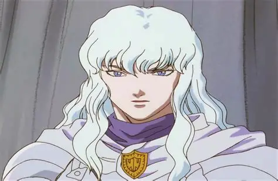
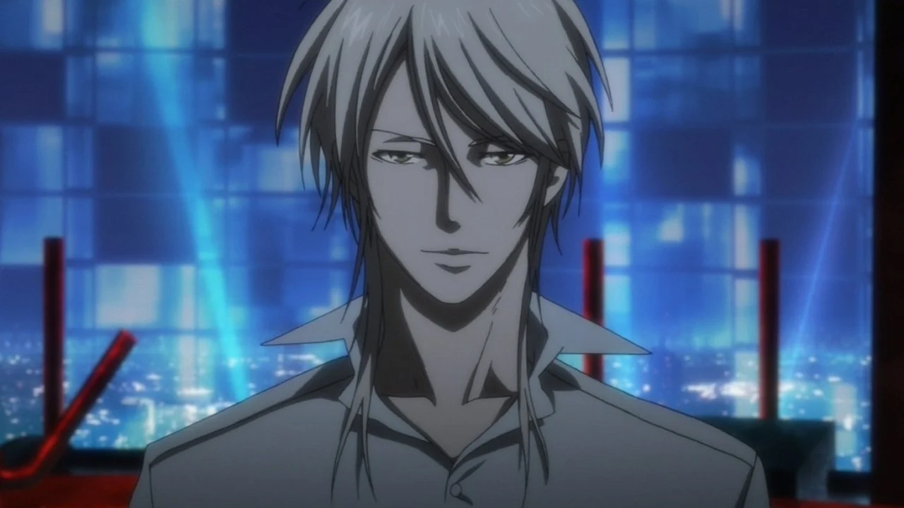
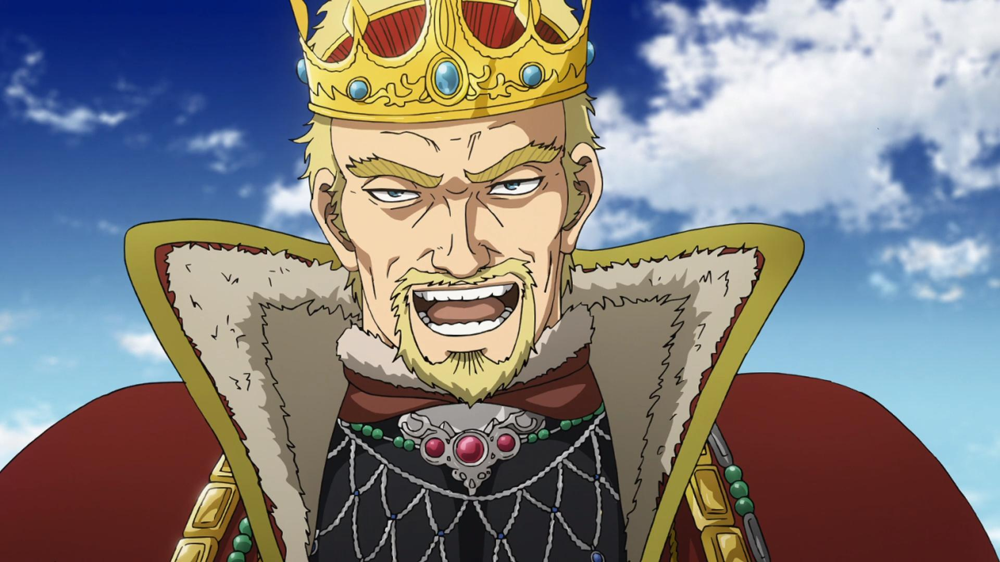
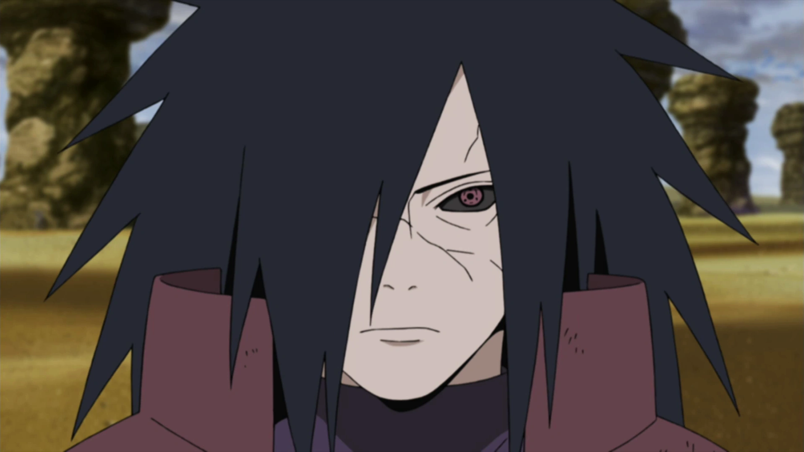
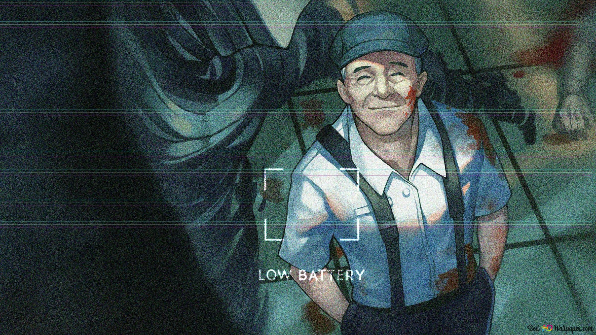
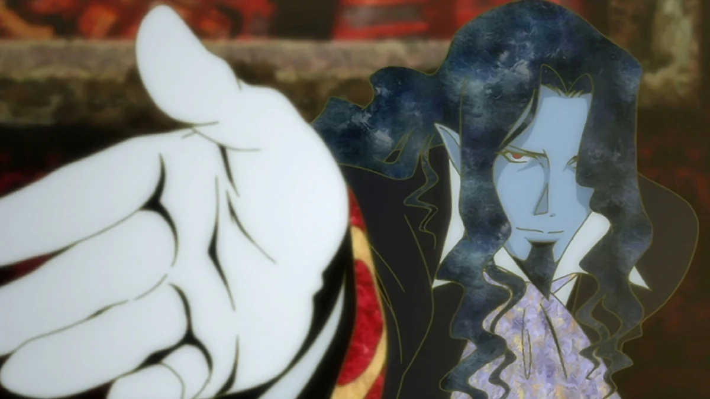

SMASH Senpai
Top 10 Anime Villains Who Were Actually Right
Not all anime villains are driven by chaos, greed, or pure evil. Some are terrifying because their logic makes sense — even when their methods go too far.
These characters didn’t see themselves as monsters. They believed they were fixing broken systems, exposing human hypocrisy, or forcing the world to confront uncomfortable truths.
What makes these villains unforgettable isn’t their cruelty, but the fact that their arguments linger long after the story ends. They challenge ideas of justice, morality, freedom, and peace — often more convincingly than the heroes opposing them.
This list ranks the Top 10 Anime Villains Who Were Actually Right — antagonists whose philosophies sparked debate, divided fanbases, and proved that being “evil” isn’t always the same as being wrong.
Sponsored
#1 Johan Liebert (Monster)

Johan Liebert is one of the most terrifying anime villains ever created — not because of power, but because of philosophy. Unlike most antagonists, Johan doesn’t seek domination, revenge, or recognition. His belief is far more unsettling: that human life has no inherent value, and that society is built on fragile lies meant to hide this truth.
Throughout Monster, Johan exposes the darkness already present in people. He rarely commits violence directly. Instead, he nudges others toward it, proving how easily morality collapses when fear, trauma, or desire are involved. His actions suggest that monsters are not born — they are revealed.
What makes Johan feel “right” in an uncomfortable way is that the world repeatedly proves him correct. People betray, manipulate, and destroy one another without supernatural influence. Johan doesn’t create evil; he simply removes the illusion that humans are inherently good.
The most disturbing aspect of Johan is that he never justifies himself emotionally. He doesn’t rage or explain. He exists as a mirror, forcing characters — and viewers — to confront the emptiness beneath social values. Monster asks a brutal question through Johan: if morality only exists when it’s convenient, does it truly exist at all?

play anime smash or pass here (not sponsored)
SMASH SENPAI – Smash or Pass#2 Griffith (Berserk)
Griffith is one of anime’s most controversial villains because his fall isn’t rooted in madness — it’s rooted in ambition. From the beginning, Griffith is honest about his dream: he wants a kingdom of his own, and he’s willing to sacrifice everything to achieve it.
What makes Griffith disturbing is that the world rewards his mindset. He leads soldiers to victory, gives meaning to their lives, and offers them purpose. In return, they willingly follow him into hell. Griffith never forces loyalty — people choose him.
The Eclipse is where Griffith crosses the line that defines him forever. But even then, Berserk refuses to simplify the moment. Griffith doesn’t betray out of cruelty. He does it because the world has taught him that dreams are worth more than lives. In a brutal, unforgiving reality, compassion is weakness.
Griffith represents the terrifying truth that success often demands sacrifice — and that society glorifies ambition without questioning the cost. He is not right morally. But ideologically, he reflects the values of a world that prioritizes achievement over humanity. That’s why Griffith remains unforgettable — because part of his logic already exists in reality.
#3 Meruem (Hunter x Hunter)

Meruem begins his story as a tyrant — a being born to dominate humanity without question. As the Chimera Ant King, he believes humans are inferior livestock, meant to be ruled or consumed. From a biological perspective, his logic is flawless.
What transforms Meruem into one of anime’s greatest villains is his growth. Through interactions with Komugi, he begins to understand human fragility, creativity, and emotional depth. Instead of rejecting this knowledge, Meruem accepts it — even when it contradicts his original purpose.
Meruem’s ideology evolves into something frighteningly reasonable. He proposes a world where the strongest rule, but the weak are protected — not exploited. Compared to the corruption, war, and hypocrisy of human governments, his system is disturbingly efficient.
By the end, Meruem is no longer a villain driven by conquest. He is a ruler searching for meaning. His death is tragic not because he loses, but because he becomes human too late. Hunter x Hunter uses Meruem to ask a painful question: are humans truly more moral — or simply better at justifying their cruelty?
#4 Shogo Makishima (Psycho-Pass)
Shogo Makishima is a villain who feels disturbingly logical in a broken society. In the world of Psycho-Pass, morality is outsourced to the Sibyl System — an artificial intelligence that judges people’s worth, potential, and guilt before they act. Makishima stands as the only person immune to this judgment.
What makes Makishima compelling is that he doesn’t reject justice — he rejects automated morality. He believes humans must be free to choose good or evil on their own, even if that freedom leads to violence. To him, a society that removes choice is already dead.
Makishima’s crimes are horrific, but his ideology exposes the flaws of the system enforcing “peace.” The Sibyl System maintains order by suppressing individuality, punishing thoughts instead of actions, and eliminating anyone who doesn’t conform. Makishima argues that such a world isn’t humane — it’s obedient.
Psycho-Pass forces viewers into an uncomfortable position: Makishima is undeniably evil, yet his critique of authoritarian control is valid. He represents the danger of sacrificing freedom for safety. In a society where morality is measured by algorithms, Makishima becomes the last proof that human will still exists — even if it manifests as chaos.
Sponsored
#5 Askeladd (Vinland Saga)
Askeladd is not a traditional villain. He is a survivor shaped by hatred, oppression, and history. Born between two cultures that despised each other, Askeladd learned early that ideals mean nothing without power.
Throughout Vinland Saga, Askeladd commits murder, deception, and betrayal — yet he does so with purpose. He despises Viking brutality, but uses their violence as a weapon to protect something greater: his homeland and his people. His morality is selective, ruthless, and deeply political.
What makes Askeladd feel “right” is his realism. He understands that the world is not changed by honor alone. Kings rise through blood, nations are built on sacrifice, and peace often requires someone willing to become the villain. Askeladd accepts this role without seeking redemption.
His final act redefines his entire character. Askeladd doesn’t seek glory or forgiveness — he chooses a death that ensures a future for others. Vinland Saga presents Askeladd as a necessary evil: a man who dirties his hands so others don’t have to. In a violent world, he is proof that morality sometimes survives only through sacrifice.
#6 Madara Uchiha (Naruto)
Madara Uchiha is driven by one belief: the world is fundamentally broken. After witnessing endless war, betrayal, and loss, Madara concludes that humanity is incapable of peace through free will. Conflict, to him, is inevitable.
His solution is terrifying yet internally consistent — the Infinite Tsukuyomi. A dream world where everyone lives happily, free from pain, hatred, and suffering. Unlike other villains, Madara doesn’t seek control or worship. He wants silence. An end to history’s cycle of violence.
What makes Madara compelling is that Naruto repeatedly proves him right. Every generation inherits the same grudges. Every attempt at peace collapses. Madara doesn’t trust hope — he trusts patterns. And the pattern of humanity is war.
Naruto frames Madara as wrong because his solution removes free will. But Madara represents the despair that forms when hope fails repeatedly. He is the embodiment of trauma left untreated. Madara’s tragedy is not that he wanted peace — it’s that he no longer believed humans deserved the chance to choose it themselves.
Sponsored
#7 Sosuke Aizen (Bleach)

Sosuke Aizen represents the ultimate rebellion against predestination. In the world of Bleach, souls exist within rigid hierarchies ruled by tradition, fear, and ancient authority. Aizen doesn’t merely oppose this system — he transcends it.
Aizen’s belief is simple but dangerous: no one should stand above him. He rejects gods, fate, and inherited power, seeing them as excuses used by the weak to justify control. His mastery of illusion symbolizes this perfectly — reality itself bends to his will.
What makes Aizen feel justified is his exposure of the Soul Society’s hypocrisy. The system claims to protect balance, yet it hides secrets, sacrifices innocents, and enforces order through deception. Aizen reveals that the “good guys” are no better — just better at hiding their sins.
Aizen’s downfall isn’t his ideology, but his arrogance. He seeks a world free of false gods, yet replaces them with himself. Bleach portrays Aizen as the danger of unchecked intellect — when intelligence lacks humility, liberation becomes tyranny. Aizen isn’t wrong to challenge the system — he’s wrong for believing only he deserves to rule it.
#8 Sato (Ajin: Demi-Human)
Sato is one of the most unsettling villains in anime because he has no grand ideology. He doesn’t want peace, justice, or revolution. He wants fun.
As an immortal Ajin, death means nothing to him. This absence of consequence frees Sato completely. He treats violence like a video game — experimenting, resetting, and escalating simply to see what happens. In a world that exploits Ajins, Sato becomes the logical extreme of dehumanization.
Society treats Ajins as lab rats, so Sato responds by acting like a monster. He exposes humanity’s cruelty by mirroring it back without restraint. While other Ajins seek acceptance, Sato embraces fear as power.
Sato isn’t justified morally — but he is socially inevitable. When a system strips people of dignity long enough, someone will eventually stop caring. Ajin presents Sato as the cost of oppression: not rebellion, but chaos. A reminder that monsters are not born — they are allowed to exist.
#9 Bondrewd (Made in Abyss)

Bondrewd is perhaps the most horrifying villain in anime because he genuinely believes he is doing the right thing. As a scientist obsessed with progress, Bondrewd views human life as a resource — valuable only in its ability to advance knowledge.
In the abyss, survival requires sacrifice. Bondrewd takes this logic to its extreme. He experiments on children, not out of malice, but curiosity. To him, emotions are obstacles. Love is inefficient. Pain is data.
What makes Bondrewd terrifying is his kindness. He speaks gently. He encourages his victims. He truly believes their suffering has meaning. This emotional disconnect reflects the danger of scientific progress without ethical boundaries.
Made in Abyss uses Bondrewd to ask a brutal question: how much suffering is acceptable in the name of advancement? Bondrewd answers with silence. He represents the horror of progress without humanity — a man who sacrificed his soul long before sacrificing others.
#10 The Count of Monte Cristo (Gankutsuou)
The Count of Monte Cristo in Gankutsuou is the purest embodiment of revenge ever put to animation. Once a man betrayed, imprisoned, and stripped of his future, the Count is reborn not as a hero or villain — but as vengeance given human form.
Unlike typical antagonists, the Count does not seek chaos or domination. His goal is precise and calculated: to make those who destroyed his life experience the same despair, loss, and helplessness he endured. Every move he makes is elegant, every trap carefully designed.
What makes the Count terrifying is his emotional detachment. He does not rage. He does not scream. He waits. Time is his greatest weapon. His enemies are allowed to live comfortably, only so their downfall will be more devastating.
Gankutsuou presents revenge not as justice, but as a consuming fire. The Count sacrifices his humanity piece by piece, becoming something inhuman yet tragic. He is right to be angry. Right to seek retribution. But the anime makes it clear: revenge may punish the guilty, but it destroys the soul of the one who carries it.
Play Smash or Pass on SMASH Senpai.
 PLAY SMASH OR PASS
PLAY SMASH OR PASS